무기와 장난감 - 나폴레옹과 프랑스 공군 이야기 (마지막편)
게시: 2018-04-29T15:47:36+09:00
기구 중대가 포로 생활에서 풀려난지 1년 후인 1798년, 나폴레옹이 이집트 원정에 나설 때 그의 함대에는 이 기구 중대가 필요한 장비와 함께 탑승해 있었습니다. 왜 나폴레옹은 주르당이나 오슈 등이 다 꺼렸던 기구 중대를 특별히 싣고 갔던 것일까요 ? 군사 천재인 그는 다른 장군들과는 달리 정보 병기로서의 기구의 특성을 대번에 알아본 것이었을까요 ? 아니었습니다. 나폴레옹이 기구 중대를 데려간 것은 이들을 선전용 심리전 도구로 생각했기 때문이었습니다.
나폴레옹이 이끌고 출발한 13척의 전함, 7척의 프리깃함, 그리고 300척 이상의 수송선으로 구성된 대함대에는 수병들 외에도 보병 3만, 기병 2천8백, 야포 60문과 공성포 40문, 그리고 공병 2개 중대가 탑승해 있었습니다. 그리고 거기에 무척이나 독특한 젊은이들과 중년 남자들이 167 명이나 포함되어 있었지요. 이들은 군인이 아니라 수학자, 화학자, 생물학자, 기계 기술자 또는 학자라고 자부하는 대학생들이었습니다. 그들 중 일부는 사실 학자가 아니라 화가 등 예술가도 섞여 있었는데, 군인들은 그들 중 이공계가 아닌 예체능계 예술가들을 기가 막히게 구별해내고는 그들을 학자(savant 지식인이라는 뜻) 대신 반쪽 학자(demi-savant)라고 부르기도 했습니다.
나폴레옹은 이들 학자들이 이집트에서 과학 실험과 관측 등을 할 때 기구가 꽤 유용하게 사용될 수 있을 것이라고 생각했습니다. 특히 현지 주민들에 대해 프랑스의 위대함을 알려주고 복속시키는데 있어 '프랑스인들은 하늘도 날아다닌다'는 것을 직접 보여주는 것만큼 좋은 수단도 없다고 생각했지요. 나폴레옹이 학자들을 이집트에 데려가는 이유 중 하나가 '인류 문명의 발상지 이집트에 서구에서 시작된 계몽 사상과 혁명 정신을 다시 이집트에 되돌려 준다'라는 것도 있었거든요. 확실히 이집트인들을 앉혀 놓고 루소의 사회 계약론을 설명하는 것보다는, 사람을 태운 기구가 두둥실 떠오르는 것을 수천 명의 이집트인들에게 보여주는 것이 프랑스 제국이라는 브랜드 파워를 선전하는데 훨신 더 효과적이었을 것입니다.
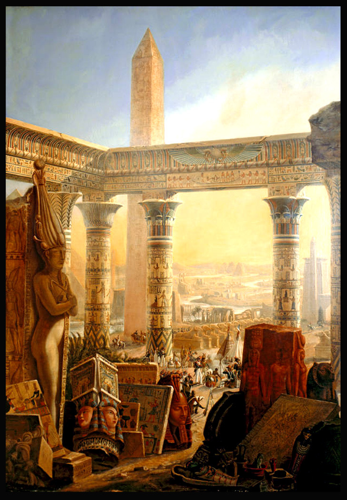
(나폴레옹의 의도대로, 이집트 원정을 통해 문화가 전파되기는 했습니다. 그러나 나폴레옹이 생각했던 것과는 정반대로, 유럽 문화가 이집트에 전달되었다기 보다는 이집트의 찬란한 고대 문화에 매료된 학자들이 그 문화를 유럽에 들여놓기에 바빴습니다. 이 원정을 계기로 이집트학 Egyptology 라는 학문이 새로 생겨날 정도였으니까요. 나폴레옹의 말메종 저택에도 이집트 관련 물건들과 문양 등이 잔뜩 있다고 합니다.)
하지만 나폴레옹의 이집트 원정길은 꽃길이 아니었습니다. 이집트에 도착한지 얼마 안 되어 그 뒤를 쫓아온 넬슨의 영국 함대가 아부키르 만에 정박하고 있던 프랑스 함대를 전멸시켜 버린 것입니다. 프랑스와의 교통로가 끊긴 것은 전체 프랑스군에게도 물론 재난이었지만 특히 기구 중대에게는 최악의 사건이었습니다. 이들은 카이로를 점령할 때까지는 상황이 어떨지 모르니 안전한 전함에 기구 본체와 수소 생성 장치를 포함한 주요 장비 전체를 두고 왔던 것이지요. 물론 그 모든 것이 군함들과 함께 아부키르 만 바닥으로 가라 앉았습니다. 기구가 없는 기구 중대는 아무 짝에도 쓸모가 없었습니다. 그들은 원래 전투 부대가 아니어서 싸움에는 재능이 없었고 대신 손재주가 좋았으므로 이런저런 잡역에 동원되었습니다. 쿠텔도 군인으로서가 아니라 학자로서 활동했습니다. 그는 캐러번들을 따라 시나이(Sinai) 반도를 탐험하기도 했고, 룩소르(Luxor)의 오벨리스크(obelisk)들을 프랑스로 운송해올 방법을 제안하기도 했습니다. 실제로 1833년 이 오벨리스크를 프랑스로 가져올 때 그 방법이 사용되었다고 합니다.
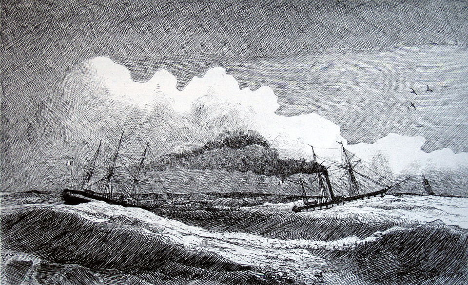
(1833년 이집트의 지배자 무함마드 알리 파샤가 프랑스에게 선물한 3천년 묵은 룩소르 오벨리스크를 실어나르는 증기선 스핑크스 Sphinx 호의 모습입니다. 워낙 길고 무거운 물건이다보니 스핑크스 호를 직접 부두에 접안시켜 싣지는 못하고 프랑스가 오로지 이 목적으로 특수 제작한 평저선 룩소르 Louqsor 호에 싣고 그 배를 예인하는 방식으로 가져 왔습니다.)
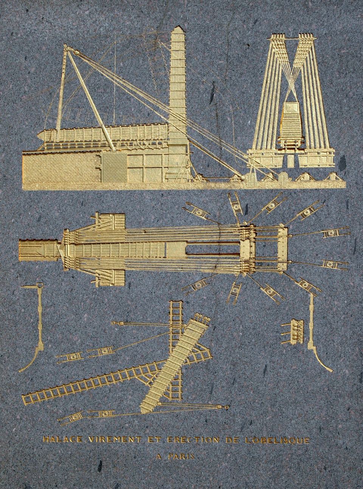
(오벨리스크를 세우기 위한 준비 작업도입니다. 이렇게 오벨리스크를 눕히고 수송하고 다시 세우는 일은 당시로서는 정말 대단한 기술적 업적이었습니다. 철제 도구도 없던 이집트인들이 3천년 전에 이런 일을 해냈다는 것은 정말 대단한 것이지요.)
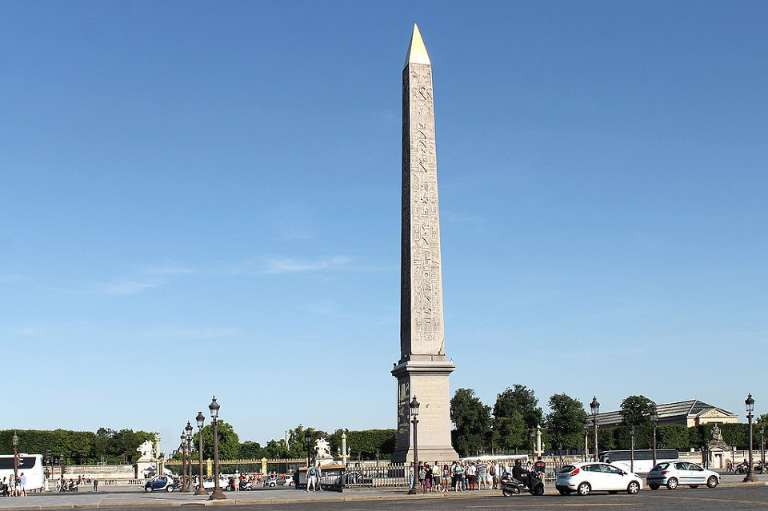
(지금도 파리 콩코드 광장에 서있는 룩소르 오벨리스크입니다. 파리 시내에는 오벨리스크가 이것 말고도 여러 개 서있습니다. 대부분은 진짜 이집트에서 가져온 것이라는데, 그 중에서도 가장 유명한 것은 이 룩소르 오벨리스크입니다.)
이들이 이집트에서 기구를 띄운 일이 있기는 했습니다. 다만 그 일의 주역은 쿠텔이 아니라 기구 중대 학교장이었던 콩테(Nicolas-Jacques Conte)였습니다. 콩테는 1798년 12월, '이집트인들에게 프랑스의 과학 문명을 과시하라'는 나폴레옹의 취지에 따라 기구를 띄웠습니다. 아니, 띄우려 했는데 기구에 불이 붙으며 참담한 실패로 끝나고 말았습니다. 프랑스인들이 하늘을 나는 기계를 보여준다는 말을 듣고 몰려왔던 이집트인들은 '아마 프랑스인들이 적 진지를 불태우는 기계를 만든 모양'이라고 오해했다고 합니다. 체면을 구긴 콩테는 다시 더 큰 기구를 준비하여 마침내 10만의 이집트인들이 보는 앞에서 마침내 카이로 하늘에 기구를 띄우는데 성공했습니다. 그러나 이 기구를 본 이집트인들은 나폴레옹의 기대와는 달리 별로 대단한 인상을 받지 못했습니다. 이집트인 학자인 알-자바르티(Abd al-Rahman al-Jabarti al-Misri)는 이 광경을 보고 '프랑스인들이 말하는 기구라는 것은 명절에 카이로의 노예들이 띄우는 연과 비슷한 것으로서, 이걸 타고 다른 나라까지 여행을 한다는 것은 말도 안되는 이야기'라는 기록을 남겼습니다.
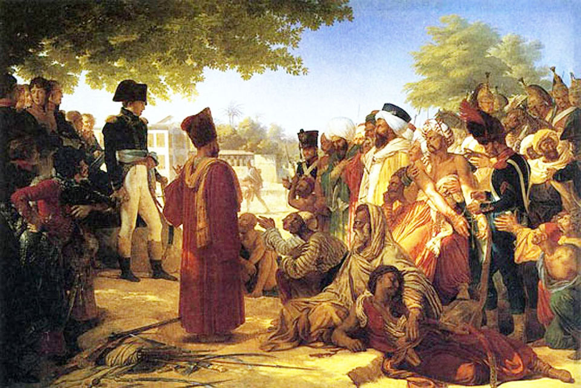
(꼭 기구 시연의 실패 때문은 아니겠습니다만 결국 나폴레옹의 이집트 원정은 의도했던 바를 하나도 이루지 못하고 실패로 끝났습니다. 남은 것은 서구 기독교 세력에 대한 이슬람의 증오 뿐이었지요.)
우여곡절 끝에 1802년 영국군과 협상하여 프랑스로 철수해온 이집트 원정군 중에는 기구 중대도 포함되어 있었습니다. 그러나 이들을 기다리고 있던 것은 기구 중대의 해산 소식이었습니다. 프랑스 국내에 남아 있던 제2 기구 중대는 이미 1799년 1월에 해산된 뒤였고, 그들도 도착 즉시 해산 명령을 받았습니다. 하긴 몇 년 동안 국방 예산만 까먹고 아무 활약이 없었으니 쿠텔이나 다른 기구 중대원들도 할 말이 없었을 것입니다. 이것이 사실상 기구 중대의 종말이었습니다.
왜 나폴레옹은 야전에서 기구를 쓰지 않았을까요 ? 이유는 간단합니다. 기구를 운용하기 위해서는 다량의 수소를 생성해야 했는데, 당시 사용되던 라브와지에-므니에 공법은 가열로와 강철관 등 무겁고 거추장스러운 장비를 필요로 했습니다. 또한 라브와지에-므니에 공법으로 수소를 만들어 커다란 기구를 가득 채우는 것은 시간이 오래 걸리는 일이었습니다. 만약 나폴레옹이 주로 정적인 방어전을 펼치는 장군이었다면 기구가 큰 도움이 되었을 수 있습니다. 그러나 나폴레옹은 무엇보다 기동력을 중시하는 공격 위주의 지휘관이었습니다. 효과도 불분명한 기구를 띄우자고 그런 짐더미를 떠매고 다닐 사람도 아니었고, 기구에 수소를 채우는 것을 기다리느라 전투 개시를 미룰 사람도 아니었지요. 쿠텔이 플뢰뤼스로 앙트프레낭 호를 끌고 갔듯이 기구를 주입한 상태로 끌고 다니는 것도 대안이 될 수 없었습니다. 나폴레옹의 작전 스케일은 주르당이 좁은 벨기에에서 펼치던 것과는 차원이 다른 것이었으니까요. 2~3일에 걸쳐 50km 정도야 둥둥 뜬 기구를 끌고 다닐 수 있었겠지만, 몇 달에 걸쳐 수백 km를 그럴 수는 없었습니다. 비단으로 만든 당시 기구의 재질은 100% 기밀성을 유지할 수 없었으니까요.
결정적으로, 전에 나폴레옹과 잠수함 편에서도 다루었습니다만, 나폴레옹은 군사 천재임에도 불구하고 과학에 의한 신무기 개발에 관심이 별로 없었습니다. 오히려 (다음 편 주제가 되겠습니다만) 그는 설탕 제조법 같은 경제 발전을 위한 산업 기술 개발에 큰 관심이 있었습니다. 그런 것을 보면 과연 나폴레옹을 피에 굶주린 전쟁광으로 보는 것이 맞는 평가인지 심각한 의문이 듭니다. 이 이야기는 최근 유발 하라리의 '사피엔스'를 읽고 있는 와이프도 하더군요. 어느날 묻더라고요. "나폴레옹이 정말 신무기 개발에 소극적이었냐?" 라고요. 이 책에 그렇게 나온다고 하더라고요.
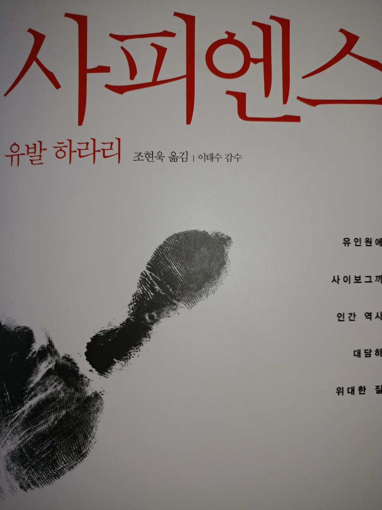 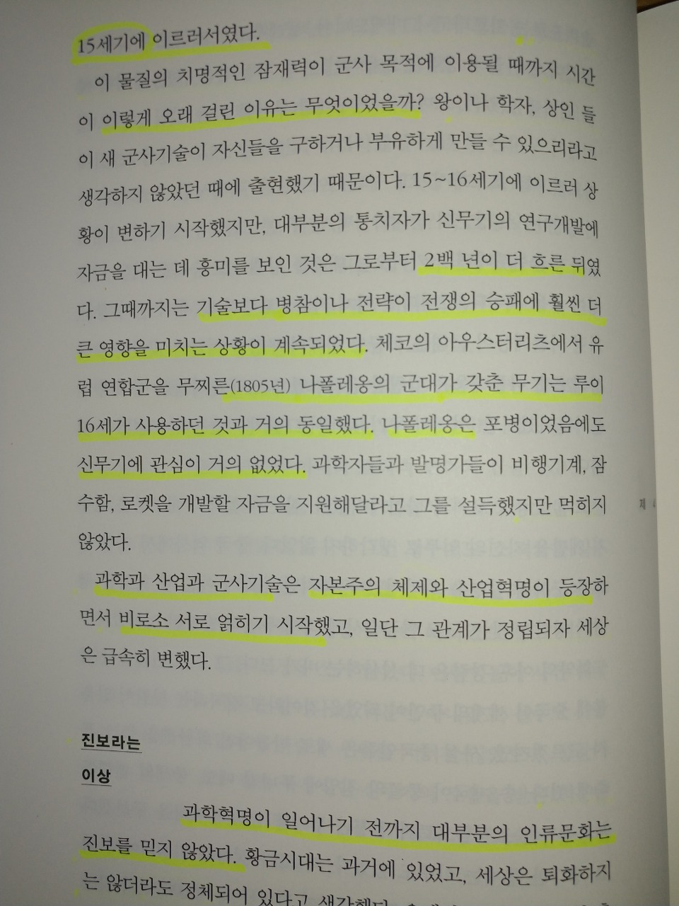
(이 책에 따르면 산업 혁명 이전에는 군사 기술 발전이 전쟁에 큰 영향을 주지 않았다고 합니다. 아마 그런 소리를 들으면 전국의 밀덕들이 발끈해서 들고 일어나겠지요. 하지만 산업 혁명 이전인 18세기 중반에 머스켓 소총과 전장식 대포로 무장한 유럽 군대가 천진에 상륙한다면 과연 19세기 중반처럼 중국을 유린할 수 있었을까요 ? 또 플레이트 아머와 등자, 석궁으로 무장한 중세 군대가 로마 군단병들과 맞짱을 뜬다면 과연 일방적인 승리를 거둘 수 있을까요 ? 그런 생각을 하면 유발 하라리의 주장이 틀린 것은 아니라고 봅니다.)
그러나 나폴레옹이 공군을 창설하고 거기에 대대적인 투자(?)를 하는 사건이 벌어집니다. 1803년 5월 아미앵 조약에 의한 짧은 평화가 깨진 직후, 나폴레옹은 대대적인 병력과 자금을 동원하여 영국 침공 준비를 시작했습니다. 이때 나폴레옹은 공군 비슷한 것을 만들었습니다. 그리고 그 총책임자로 소피라는 이름의 30대 여성을 임명했습니다. 영국 침공의 선봉을 맡은 공군 지휘관이 가냘프고 아름다운 프랑스 여성이라니, 얼마나 로맨틱한 일입니까 ?
하지만 이 여성, 그러니까 처녀적 이름은 소피 아르망 (Marie Madeleine-Sophie Armant)이었다가 기구 모험가인 장-피에르 블랑샤르(Jean-Pierre Blanchard)와 결혼하면서 소피 블랑샤르(Sophie Blanchard)로 알려진 이 여성은 사실 아름답지도 않았고, 성격도 무척 소심했으며, 결정적으로 공군 책임자도 아니었습니다. 이집트 원정 때부터 그랬던 것처럼, 나폴레옹은 기구를 어디까지나 행사용/축제용 유흥거리 정도로 생각했습니다.
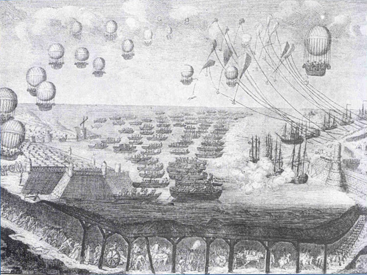
(1804년 당시 영국 신문 잡지에 나오던 프랑스군의 영국 침공 작전 그림입니다. 프랑스군은 함대는 물론 공중을 뒤덮은 기구 군단을 타고 올 뿐만 아니라, 아예 도버 해협 밑에 땅굴을 파고 쳐들어오는 것으로 묘사되었습니다.)
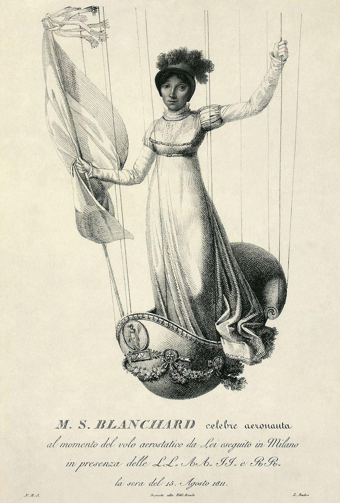
(그러나 실제 소피 아르망은 영국인들의 상상과는 달리 대규모 기구 군단을 이끄는 장군이 아니라, 행사용 기구를 타는 서커스 자영업자에 불과했습니다. 그녀는 평생 67 회의 기구 비행을 수행했는데, 그녀의 비행 목적 중 가장 큰 것은 같은 기구 비행사였다가 기구 사고로 일찍 사망한 남편의 빚을 갚기 위해 돈을 버는 것이었습니다.)
소피 아르망이 1804년 공군 책임자가 되었다는 것도, 사실은 "공식 축제 비행사"(Aeronaute des Fetes Officielles)로 임명된 것에 불과했습니다. 다만 소문에 이 여성이 정말 기구를 타고 공중으로 영국을 침공할 계획의 초안을 만들었다는 이야기가 떠돌기는 했다고 합니다. 이 소문은 사실 프랑스보다는 영국에 더 떠들썩하게 퍼져서, 바다 위에 성채를 띄우고 하늘 위에 기구를 띄워 대대적으로 영불 해협을 건너는 프랑스군의 모습을 그린 신문 잡지가 영국에서 불티나게 팔리기도 했습니다. (그런 것을 보면 사람들은 공포 이야기를 참 좋아하는 것 같습니다.) 실제로 소피 블랑샤르의 남편인 장-피에르 블랑샤르는 이미 1785년 1월 7일에 영국의 도버 캐슬(Dover Castle)에서 프랑스의 귄(Guines)까지 2시간 30분 만에 기구를 타고 영불 해협을 건너는 기염을 토하기도 했습니다. 하지만 이건 어디까지나 영국과 프랑스가 편서풍 지대에 있기 때문에 가능한 일이었습니다. 즉, 범선과 마찬가지로, 영국에서 프랑스로 가는 것은 쉬워도 프랑스에서 영국으로 가는 것은 (적어도 기구로는) 불가능한 일이었지요. 실제로도 로지에(Pilatre de Rozier)라는 사람이 블랑샤르의 성공을 흉내내어 시도했던, 프랑스에서 영국으로 가는 영불 해협 횡단은 1785년 6월 15일 추락으로 끝나 로지에가 사망하는 비극을 빚었을 뿐이었습니다.
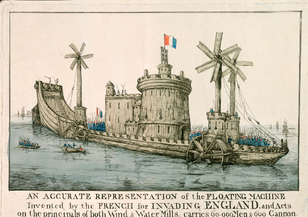
(저렇게 풍차와 수차로 추진력을 얻는 대형 선박은 정말 미야자키 하야오의 만화영화에 주로 나오던 것들이지요. 라퓨타 생각이 나네요.)
남편 블랑샤르가 기구 사고로 추락사한 이후에도 소피 아르망은 나폴레옹 밑에서 기구 책임자로 여러번 비행을 했습니다. 그녀는 나폴레옹과 마리-루이즈의 결혼식 때도 축하 비행을 했고, 나중에 그 둘 사이에 로마 왕이 태어나자 역시 축하 비행을 하며 그 탄생을 알리는 포고문을 공중 살포하기도 했습니다. 그녀의 축하 비행은 편을 가리지 않아서, 나폴레옹 몰락 직후 1814년 부르봉 왕가의 루이 18세가 파리에 복귀할 때도 축하 비행을 했습니다. 루이 18세는 그녀의 기구 비행을 보고 너무나 감동하여, 그녀에게 "왕정 복위 공식 비행사"라는 이상한 칭호를 내리기도 했습니다. 그녀는 나중에 손과 얼굴에 고드름이 어는 고생을 해가며 알프스를 기구로 넘는 등 수많은 비행을 했습니다.
그러나 '용감한 비행사도 있고 늙은 비행사도 있지만 용감한 늙은 비행사란 없다'라는 말이 사실인가 봅니다. 그렇게 많은 비행을 한 베테랑 비행사 소피 블랑샤르도 결국 1819년 파리 티볼리(Tivoli) 공원에서 비행을 하다 수소 기구에 화재가 발생하면서 41세의 나이에 추락사했습니다. 그녀의 죽음은 유럽 전역에서 애도되었고, 쥘 베른느와 도스토예프스키도 각각 자신의 작품에서 그녀의 이름을 언급했습니다. 티볼리 공원 입장객들이 기부한 돈으로 만들어진 그녀의 묘비에는 "victime de son art et de son intrepidite", 즉 "그녀 자신의 기술과 용기로 인한 희생자"라는 문구가 새겨졌다고 합니다.
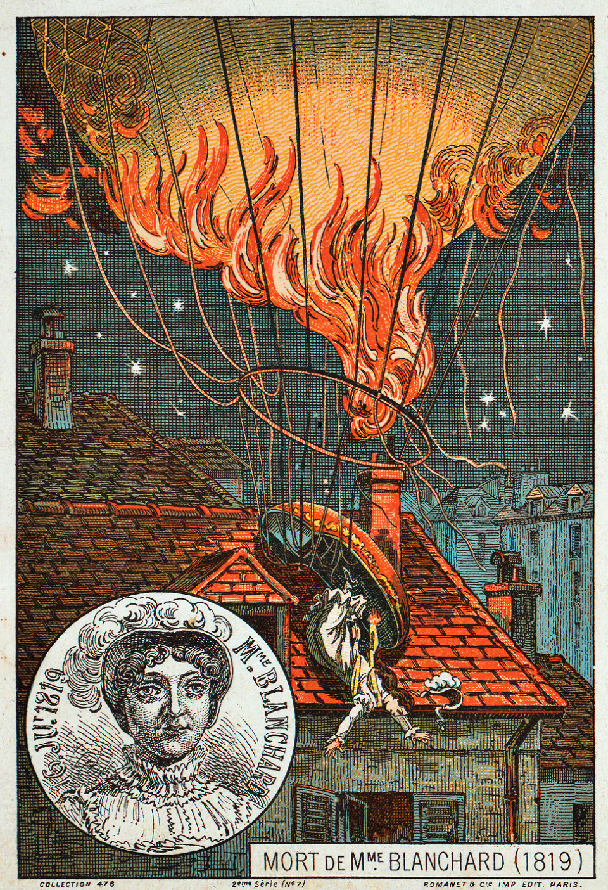
(소피 아르망, 즉 블랑샤르 부인의 비극적 죽음을 묘사한 그림입니다. 모금으로 만들어진 그녀의 묘비에도 불타는 기구를 묘사해놓았다고 하는데, 그건 좀 부적절한 추모 방식이 아닐까 생각합니다.)
Source : https://en.wikipedia.org/wiki/L%27Intr%C3%A9pide
https://en.wikipedia.org/wiki/Observation_balloon
https://en.wikipedia.org/wiki/Battle_of_Fleurus_(1794)
https://en.wikipedia.org/wiki/Hot_air_balloon
https://en.wikipedia.org/wiki/History_of_military_ballooning
https://vistaballoon.com/blog/2014/10/the-history-of-ballooning/
http://www.balloonfiesta.com/gas-balloons/gas-vs-hot-air
http://www.balloonfiesta.com/gas-balloons/history-2
http://www.pbs.org/wgbh/nova/space/short-history-of-ballooning.html
https://web.archive.org/web/20100528025354/http://www.centennialofflight.gov/essay/Lighter_than_air/Napoleon%27s_wars/LTA3.htm
https://en.wikipedia.org/wiki/Nicolas-Jacques_Cont%C3%A9
https://en.wikipedia.org/wiki/Jean-Pierre_Blanchard
https://en.wikipedia.org/wiki/Louis-S%C3%A9bastien_Lenormand
https://en.wikisource.org/wiki/1911_Encyclop%C3%A6dia_Britannica/Cont%C3%A9,_Nicolas_Jacques
https://fr.wikipedia.org/wiki/Compagnie_d%27a%C3%A9rostiers
https://en.wikipedia.org/wiki/Ch%C3%A2teau_de_Meudon
http://www.strangehistory.net/2011/02/06/lavoisier-blinks/
https://en.wikipedia.org/wiki/Sophie_Blanchard
https://en.wikipedia.org/wiki/Napoleon%27s_planned_invasion_of_the_United_Kingdom